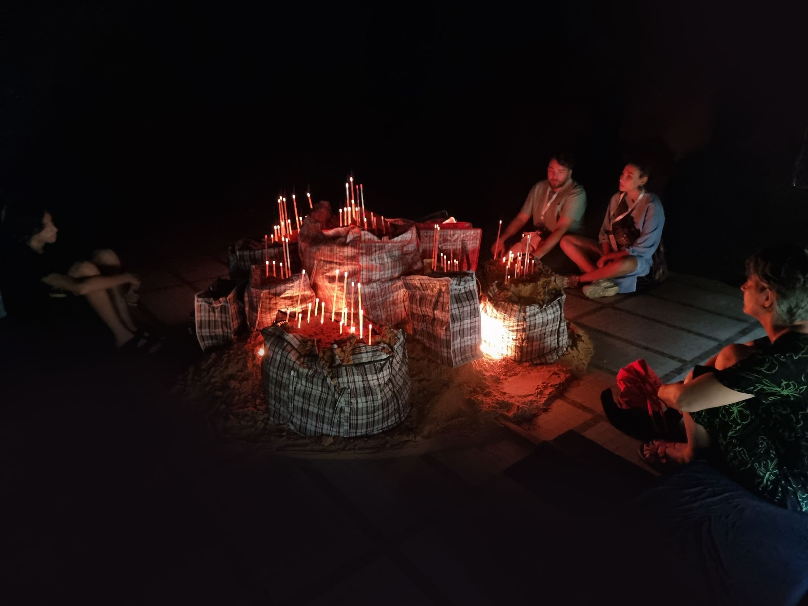
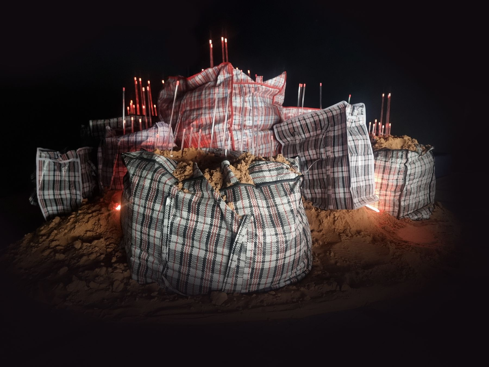
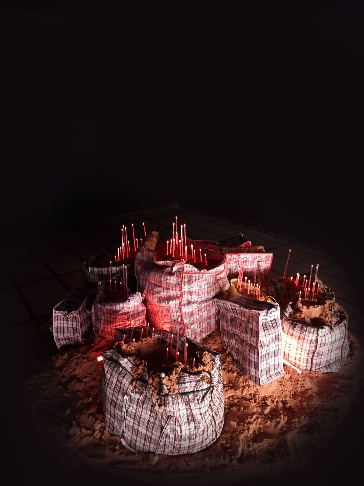

Liminal Sanctuary

Through symbolic elements such as Ghana-must-go bags and electronic candles animated with official migration data, Liminal Sanctuary builds an immersive space to safeguard oral memories that explore the notion of home and identity in the dynamics of the new contemporary micro-diasporas.
Where does "Home" begin, and where does it end? How do the new displacements shaped by complex interconnectivity affect our notion of identity? How do we inhabit the in-between of unstable spaces? What does it mean to navigate the liminality between physical and virtual worlds, between the past and the future, and between the self and the other?
The project includes a collection of stories from individuals who have navigated the challenges and emotions of displacement, building a collective emotional landscape that resonates with diverse audiences. The focus is on the emotional nuances of displacement journeys and how people cope with the sense of being "in-between."
The Complexity of Displacement
In today's interconnected world, the experience of displacement extends beyond traditional geographical boundaries. The project explores how our digital connections, virtual identities, and emotional ties create new forms of belonging and displacement that coexist with physical migration.
Liminal Sanctuary acknowledges that many individuals now navigate multiple forms of "home" simultaneously – the physical spaces they inhabit, the digital communities they belong to, and the emotional connections they maintain across distances. This complex layering of identity and belonging creates a new form of "liminal" existence – a state of being in-between, neither fully here nor there.



Emotional Landscape
The concept of an "emotional landscape" is central to Liminal Sanctuary. Rather than focusing solely on geographical or physical displacement, the project maps the emotional terrain that migrants, refugees, digital nomads, and other displaced individuals navigate.
Our future homelands may also become an "unreachable" concept that will exist only in the realm of emotional landscapes, sustained by memory and nostalgia but inaccessible in physical reality. Governments, tech companies, and grassroots organizations, will shape these future diasporas alongside non-humans, machines and AI agents who will be maintaining cultural archives, facilitating virtual gatherings, or even participating as sentient entities in diasporic communities.
Through the collected audio stories, visitors gain insight into how individuals create meaning and build identity in the midst of displacement, and how they develop resilience and new forms of belonging in unfamiliar contexts.
Exhibitions
- Biennale Dakar, Sélection de l'Exposition Internationale 2024 Dakar, Senegal, 2024
Credits
- Concept and Direction Mario Guzman and Agustín Ramos Anzorena